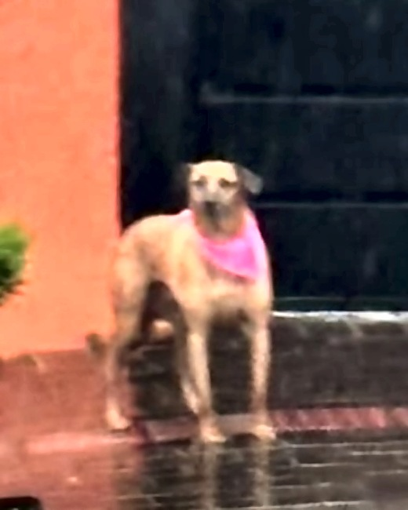

vista de lenço rosa,
perto da Retipasso
perto da Retipasso
Cachorra desaparecida
Chiquinha
Sumiu em 05/10
no Lucas Araújo.
no Lucas Araújo.
Rua Minas Gerais, no fim do dia. É castrada, está assustada e pode estar escondida.
Viu a Chiquinha? Chame no direct
@souazoe.pf